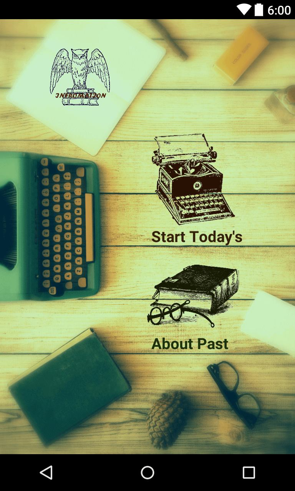
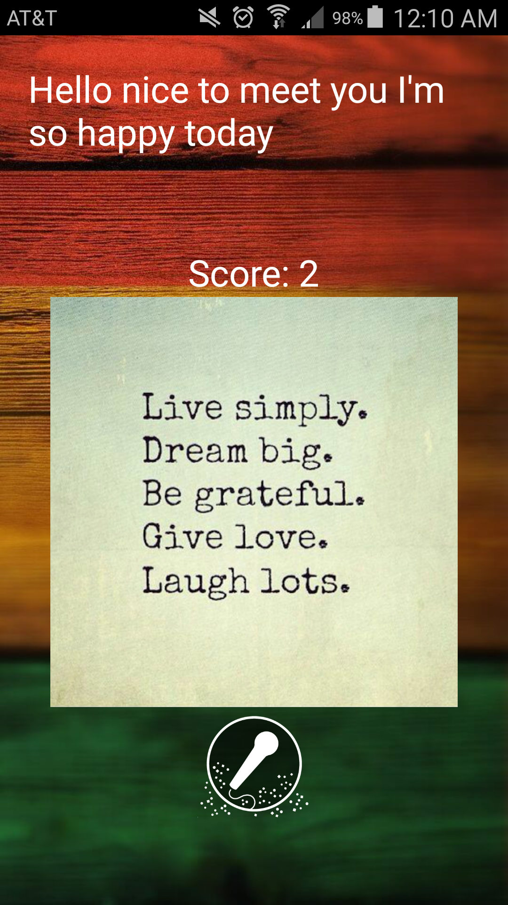

Wei-Chen Wang
First year master student in Computer Science at UC San Diego.
What's your feeling today? Have something want to say and record? It is an Android application features audio diary, which is for you to say something and record your words. The app connects to your phone's built-in microphone. After you speak something, the speech will be converted into text and a simple semantic analysis is done to estimate your mood today! You could also see the history page for what you have recorded before.
Click "START" to start using MOODIARY!
Click "Start Today's" to start recording today's mood or "About Past" to see past recorded history.
Click the microphone button to start recording.
Check the recorded history. Click a specific date and see the history of that date!
First year master student in Computer Science at UC San Diego.

First year PhD student in Electrical and Computer Engineering at UC San Diego.

First year master student in Computer Science at UC San Diego.